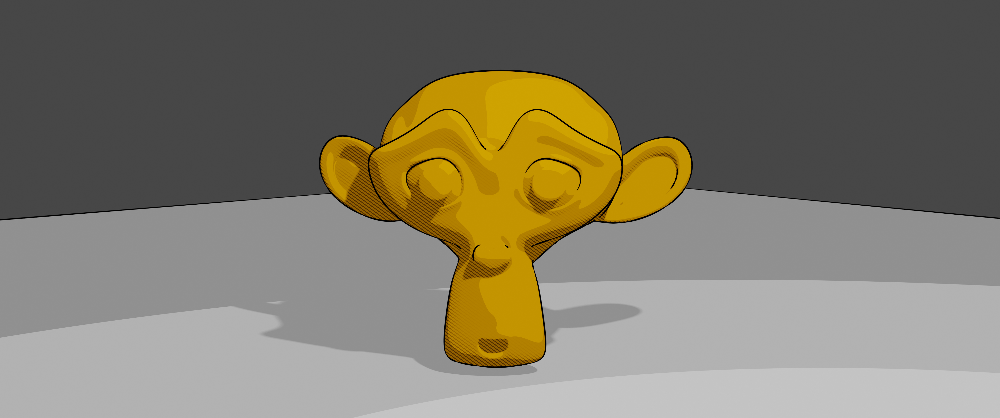
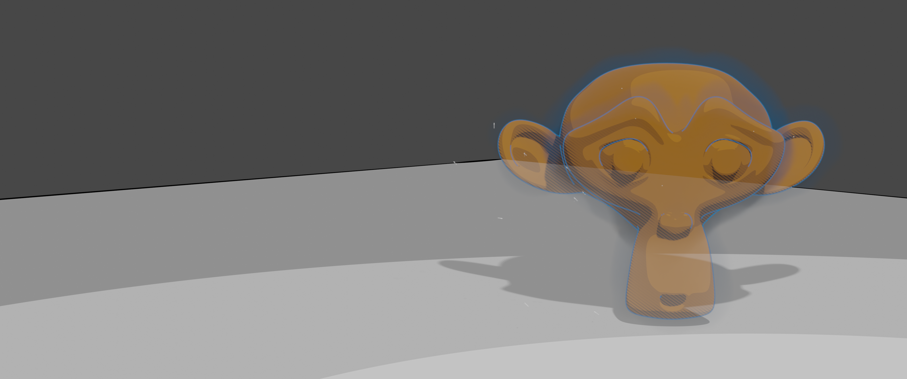
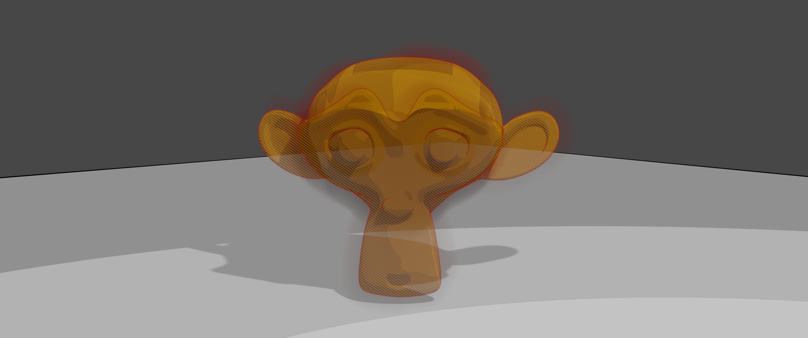

On avait le shader pour les personnages et l'environnement au global, mais il fallait faire un shader différent pour le Clan des Étoiles et la Forêt Sombre. On a donc choisi de les faire un peu transparents, ou fantomatiques, et avec un "line art" (le contour) - bleu (#1671AC) pour les Étoiles et rouge (#910500) pour la Forêt Sombre - avec 30 % de transparence (0 % pour opaque).

Le shader global

Le shader pour le Clan des Étoiles

Le shader pour la Forêt Sombre
Retour